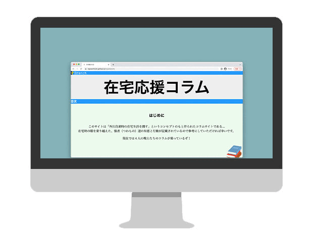
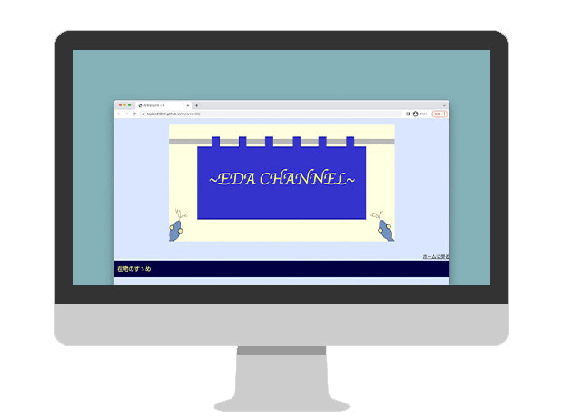

ポートフォリオサイト
製作箇所
コーディング、デザイン、オブジェクト作成などほぼ全て
コンセプト
わかりやすさに重点を起きました。高級感と落ち着きのあるカラーリングに所々緩さを取り入れることで自分の色を出してみました。
使用ツール
- Atom(HTML,CSS)
- デザインソフト(Illustrator,Photoshop)
工夫点
これ以前のサイトではスマホ画面への対応をしていなかったので、今回初めて取り入れて見ました。
その他
何故、雪のモチーフになったかについては、私の誕生日がクリスマスイブなためです。
在宅応援サイト
>
サイトへGo
製作箇所
コーディング、オブジェ作成
コンセプト
一昔前の攻略サイトをイメージして見ました。
使用ツール
- Atom(HTML,CSS)
工夫点
初のスクロールバーを取り入れてみました。纏まっていて見やすいように思案した結果つけるようにしました。
その他
同期の方がもともと作っていた物を調整しました。自分以外の人が作ったものを弄るのはとても大変でいい経験になりました。
在宅応援サイト（己）

サイトへGo
製作箇所
コーディング、デザイン、オブジェクト作成などほぼ全てを担当
コンセプト
2005年くらいのwebブログ感を意識して作成しました。
使用ツール
工夫点
あ
その他
何を書くか、どういった物を作るかなど0から己で考えて作った